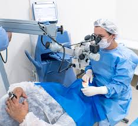

A Clínica Veterinária Vision É uma clínica especializada em oftalmologia, Diagnóstico e tratamento de problemas oculares. Focada no atendimento personalizado e respeito ao paciente, sem abrir mão do conhecimento técnico e científico mais atualizado em oftalmologia.
Nossa clínica conta com os melhores equipamentos e os profissionais mais qualificados da região.
